Duncan Campbell on the power of protest
From the suffragettes at the start of the last century to Reclaim the Night in the 1970s; from the battle of Cable Street against the British Union of Fascists in 1936 to the Anti-Nazi League marches four decades later; from the million marchers against the Iraq war in 2003 in London to the massive turnouts across the country two decades later against the war in Gaza, protest has been a vital and constant part of the fabric of British society.
Most protests pass unnoticed, whether they are the picket lines during strikes in almost every corner of the UK or small demonstrations outside parliament. But behind almost all of them is a desire to alert the public to what is perceived as an injustice. Some – including those involved in combating racism, sexism and homophobia – have achieved many of their aims, either swiftly or after many years, and in doing so have changed the lives of millions. Others have been fruitless. Key to the success of many of them has been the coverage in the media, much of it dependent on the sort of images taken by David Hoffman, often at some risk to the photographer himself …
The sort of coverage protests receive depended, and still depends to a great extent, on the political inclinations of the relevant newspaper or broadcaster. When David and I first met, at Time Out magazine in the late 1970s, it was still a radical publication; marches and demonstrations were listed weekly in its Agitprop section and covered by its reporters and photographers – a tradition carried on by City Limits magazine in the 1980s. But by the turn of the century, information about most protests had moved predominantly online. While the Mirror carried news of the suffragettes in their early days, its owner, Alfred Harmsworth, soon felt enough was enough. “Sorry to see the outburst of suffragette pictures again,” he complained to Alexander Kenealy, editor of the Mirror, in 1912. “I thought you had finished with them. Except in an extreme case, print no more.”
The policing of protest has varied spectacularly. Demonstrators have frequently been thwarted, arrested, beaten up, kettled and, increasingly, jailed. Some have suffered worse fates: Kevin Gately, a 20-year-old student from the University of Warwick, died in 1974 in Red Lion Square, central London, in a protest against the National Front; the death of Blair Peach in 1979, in an anti-racist protest in Southall, west London, led to many more marches in his memory.
But whatever laws may change, whatever responses the authorities and media take to marches and pickets and rallies and camps and road closures and hunger strikes and paint-spraying and occupations, protest – as demonstrated so graphically here – will survive.
F ormer Guardian reporter Duncan Campbell died in May this year .
‘As I grabbed this photograph, the police tried to grab my camera. That set the tone for the next four decades’
Kicking off with this image from the last night of the 1979 Notting Hill carnival, David Hoffman recalls the start of his career
In 1963, at the end of my last term at Kingston College of Further Education, I organised a rag week stunt with some female fellow students, who chained themselves to the railings outside the Houses of Parliament to protest that their vote was meaningless. They were all quickly arrested, as was I when I went to ask about them – but I did have a photo of one of the arrests. A journalist from (I think) the Daily Mail borrowed the film. The photo was published the next day and, more surprisingly, the paper returned my film and even paid me. Just 17 and I already had an arrest, a criminal record and a protest photo in a national paper: a perfect launch pad for my career. But I didn’t spot the path that life was laying down for me. I had been given a chemistry set at age 10 and had science A-levels, so when parental pressure forced university on me, I chose chemistry out of inertia and ignorance.
A decade of loose living and truck driving followed, until 1973, when I ended up in a squat in Whitechapel, east London, with a Nikon F. I didn’t set out to photograph protests. My aim was to record the constrained world of poverty and slum housing I found myself in. I was young and perhaps believed documenting these issues might help change them. My photos of poor housing, unemployment and racism were published by Time Out, New Society, Housing Today and the Voice. But when demonstrations led to arrests, it was the national press and TV that took notice. These images were the ones most widely seen, the ones I became known for.
Protesting has never been easy, but over my career I have watched laws steadily tighten, step by boiled frog step. Now, every detail seems to fall under police control. The pace of a march, slogans on placards, what can be chanted, what’s printed on a T-shirt . New laws govern how loud a protest can be, how big it grows and whether it includes music, puppets, effigies or anything else that makes a strong photograph. Bit by bit, regulations have chipped away at our freedom to protest.
Yet protest is like a balloon: squeeze it here and it pops up there. The more it’s squeezed, the louder the bang when it bursts. Technology may be a tool of oppression, but it can also be a weapon of resistance. Activists are already using encrypted communications, decentralised organising and creative direct action to stay ahead. People have always risen to meet new challenges. Even under surveillance and repression, we have seen moments of extraordinary courage – in the streets, on social media or in quiet, everyday acts of defiance that keep movements alive. The future of protest may look different, but the spirit driving it will remain.
This is an edited extract from Protest! by David Hoffman , published by Image & Reality at £28.
Mudchute city farm protest, London, September 1977
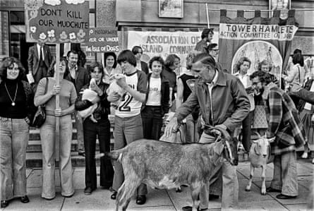The Greater London Council bought the popular farm on the Isle of Dogs intending to build a motorway. After locals marching with their animals campaigned to save it, the plan was quietly dropped.
Notting Hill carnival, London, 27 August 1979
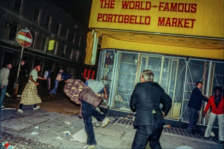In the 1970s, when I first began to document social change, I saw tensions ramped up by racist and oppressive policing dominating the communities it pretended to serve. Combined with discrimination in jobs and housing, policing tactics turned lively, optimistic youth into angry subcultures. Black youth in particular were targeted, with clubbing and street culture used as an excuse for busts and surveillance. On bank holiday Monday night, as the carnival drew to a close, police would change from friendly bobbies into pumped-up riot police as they tried to clear the streets. Moving along Ladbroke Grove, they attacked isolated groups of late-night revellers, which sparked counter-attacks and, predictably, led to the sort of retaliation pictured here.
Brixton uprising, 11 April 1981
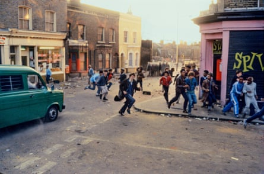When the crowds in the street grew too large and hostile for shield police to disperse, vans were driven at them at high speed.
Women’s peace camp, Greenham Common, 12 December 1982
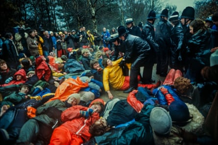It was the singing that always got me. Hundreds of women, peaceful and determined, would be roughly grabbed and dragged away like sacks, still calling for peace, undeterred by insults, arrests and violence. It always seemed to be dark, overcast and rainy. The camps were dotted along the perimeter fences and much of my time was spent running in mud-heavy wellies from one gate to another, chasing tales of fence cuttings or missile movements that rarely materialised.
Protest at the shooting of Colin Roach, London, 12 February 1983
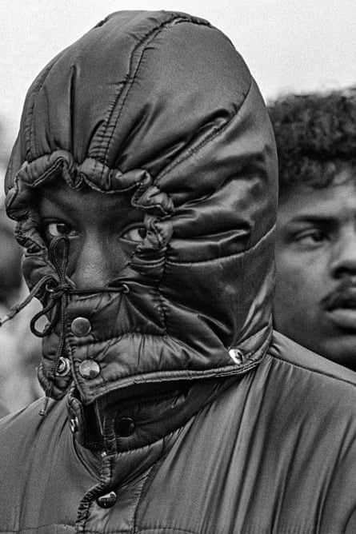Suspicions of foul play over the death of 21-year-old Colin Roach – who was shot inside Stoke Newington police station, in what officers claimed was suicide – came against a background of racist and oppressive policing in Hackney which led to many protesters feeling the need to cover their faces when marching. The police’s version of events quickly unravelled: Roach’s fingerprints weren’t found on the gun and the forensic evidence didn’t match the scene officers described. While the local MP spoke out about a “breakdown of faith and credibility” in the police, the Commission for Racial Equality called for an investigation.
Poll tax protest, Trafalgar Square, London, 31 March 1990
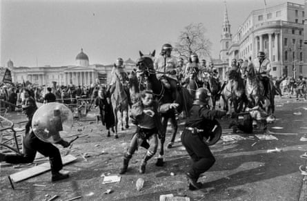Photograph: David Hoffman/David Hoffman Photo Library
The poll tax had been a festering sore for what felt like an age, David Hoffman writes , and while earlier demos had been crushed by police action, this one had really kicked off, with 100,000 people marching. After repeated charges by mounted police, riots erupted, shops were looted, police vehicles and government offices attacked, and buildings burned. The eventual cost: hundreds of millions of pounds, and the end of Margaret Thatcher’s government.
Joy Gardner protest, Hornsey, London, 7 August 1993
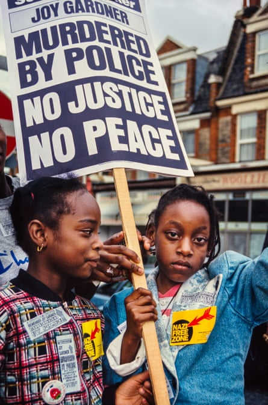Jamaican-born mature student Joy Gardner died after a brutal immigration raid on her home in which police handcuffed her, bound her with leather straps and gagged her with a 13-foot length of adhesive tape wrapped tightly around her head. Unable to breathe, she collapsed, suffering catastrophic brain damage from asphyxia. She was placed on life support but died four days later. In 1995, three of the officers involved were tried for manslaughter but were acquitted.
March for Social Justice, London, 12 April 1997
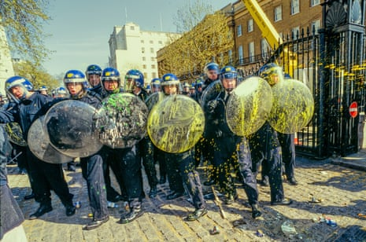As Reclaim the Streets marchers made their way into Trafalgar Square for speeches in support of sacked Liverpool dockers, thousands danced to sound systems – but the carnival atmosphere didn’t last long. Confrontations began in Whitehall and an orange smoke bomb thrown into Downing Street triggered charges by riot police on foot and on horseback, their shields sprayed with paint from protesters’ squeezy bottles. A police helicopter hovered noisily above and more than a thousand officers in black boiler suits, steel toe-capped boots and face masks blocked the exits. Once the square had been sealed, mounted police charged.
Church homophobia protest, Canterbury Cathedral, 12 April 1998
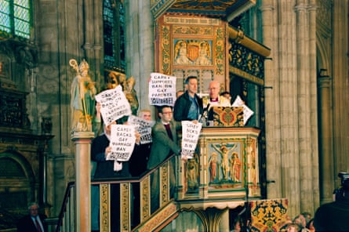Gay rights activists from Outrage!, led by Peter Tatchell (in blue shirt), stormed the pulpit of the cathedral on Easter Sunday, using archbishop George Carey’s mic to denounce the church’s homophobia and hypocrisy. Tatchell was injured and arrested. The protester in glasses to his right turned out to be an undercover police officer (or Spycop).
Anti-war protest, London, 15 March 2008
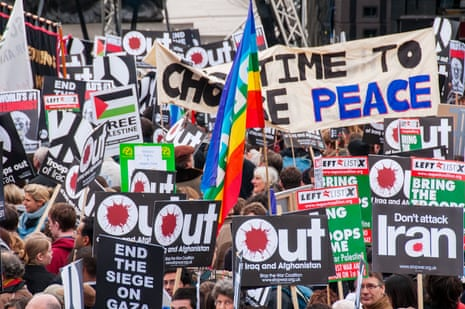On the fifth anniversary of the invasion of Iraq, the Stop the War Coalition, the Campaign for Nuclear Disarmament and the British Muslim Initiative joined in a national demonstration as part of the worldwide day of protest against George W Bush’s wars.
Student protest, Whitehall, 24 November 2010
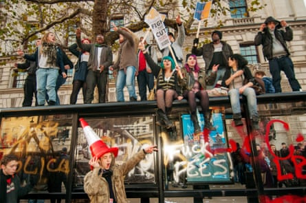While an estimated 50,000 turned out to vent their anger at government plans, a bus shelter on Whitehall – a few hundred sensible yards away from the turmoil – made a more enjoyable platform to protest against tuition fee increases and maintenance grant cuts.
Slutwalk, London, 11 June 2011
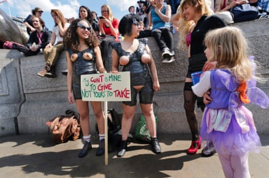Around 5,000 women and men marched to Trafalgar Square in protest against rape and sexual violence. They were part of a global movement that was triggered by a Toronto policeman’s comment that women should “avoid dressing like sluts in order not to be victimised”.
Photographer under arrest
Having spent half my life photographing others being arrested, I decided it was only fair to document my own arrests ….
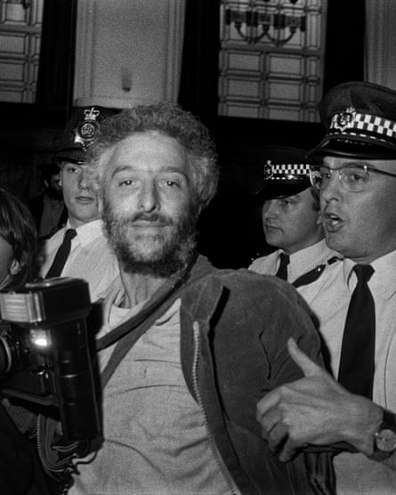At a Tower Hamlets town hall occupation on 27 April 1987, Daniele Lamarche took this picture of my arrest for refusing to stop taking photographs, then gave me her film as she was working for the council and was worried that it might affect her job.
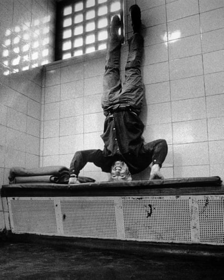Amid violent scenes following anti-Satanic Verses protests in London on 27 May 1989, missiles were thrown at poorly prepared police by angry youths. A cop I’d photographed dragged me off to Southwark nick. I took this selfie to illustrate the concept of justice turned upside down.
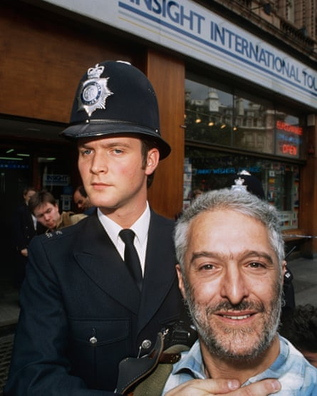At a Greenpeace anti-whaling demonstration at Norway’s tourist office in London on 26 July 1993, I was the only one whose arms weren’t chained, so the inspector, looking for someone he could actually arrest, chose me – essentially for being portable.